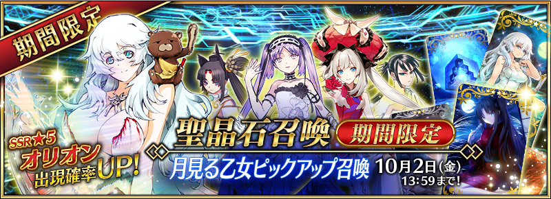

◆イベント開催期間◆
2015年9月25日（金）18：00～10月2日（金）13：59まで
◆イベント概要◆
奈須きのこ完全書きおろしストーリーによる、期間限定イベントを開催！
お月見の夜に降臨した謎のサーヴァントにまつわる事件を解決しよう！

◆イベント参加方法◆
カルデアゲートに出現したイベントクエストに挑戦し、クエストで獲得できる２種類のお団子 を集めましょう！ 特選団子を一定数集めると、ストーリーが開放されます。月見団子は、 集めた数に応じて豪華アイテムと交換できます。

◆お得な攻略方法◆
イベントで新登場する概念礼装「ムーンライト・フェスト」、「月女神の沐浴」、「ムーニー・ ジュエル」、「ムーンセル・オートマトン」を装備することで、団子の獲得数が大幅にアップします！詳しくは下記をご確認ください。

◆イベント限定報酬◆
★5（SSR）概念礼装「ムーンライト・フェスト」
ATK 250（最大：1000） HP 375（最大：1500）
◆スキル
自身のスター発生率とクリティカル威力を15％アップする ＋ 団子の獲得数を3個増やす【『月の女神はお団子の夢を見るか？』イベント期間限定】


◆交換方法◆
交換期間：10/9（金）23：59まで
※交換期間終了後、特選団子、月見団子は消滅します
ショップ内の「イベントアイテム交換」より、イベント中に集めた月見団子を以下のアイテムへ交換できます。
【QP】
10万QP
【経験値カード】
叡智の大火ALL ★3（R）
叡智の猛火ALL ★4（SR）
【霊基再臨素材】
アーチャーピース
ライダーピース
アサシンピース
アーチャーモニュメント
ライダーモニュメント
アサシンモニュメント
【ステータスアップカード】
英霊結晶・星のフォウくん
★3（R）ALLのHPアップ
英霊結晶・太陽のフォウくん
★3（R）ALLのATKアップ
【イベント限定概念礼装】
ムーンライト・フェスト
【経験値カード】
叡智の大火ALL ★3（R）
叡智の猛火ALL ★4（SR）
【霊基再臨素材】
アーチャーピース
ライダーピース
アサシンピース
アーチャーモニュメント
ライダーモニュメント
アサシンモニュメント
【ステータスアップカード】
英霊結晶・星のフォウくん
★3（R）ALLのHPアップ
英霊結晶・太陽のフォウくん
★3（R）ALLのATKアップ
【イベント限定概念礼装】
ムーンライト・フェスト



◆月見る乙女ピックアップ召喚期間◆
期間：2015年9月25日(金) 18：00 ～ 10月2日(金) 13:59
サーヴァント「★5（SSR）オリオン」が新登場！
イベント中にてお団子の獲得数が大幅にアップする効果をもった、概念礼装3種も新登場！ 複数装備することで最大700％まで獲得数がアップします。
新登場サーヴァント・概念礼装、期間限定概念礼装、ピックアップサーヴァント4騎の出現確率がUP！
10回召喚では★4（SR）以上1枚確定と★3（R）以上のサーヴァント1騎確定！
※★4（SR）以上確定にはサーヴァントと概念礼装が含まれます。
◆新登場サーヴァント◆
★★★★★SSR アーチャー
オリオン
MAX ATK 11107 MAX HP 14553宝具 月女神の愛矢恋矢（トライスター・アモーレ・ミオ）
◆期間限定概念礼装◆
★★★★★SSR
スキル
自身に毎ターンHP500回復状態を付与する
＋ 団子の獲得数を100%増やす
【『月の女神はお団子の夢を見るか？』イベント期間限定】
月女神の沐浴
ATK 0（最大：0） HP 500（最大：2000）スキル
自身に毎ターンHP500回復状態を付与する
＋ 団子の獲得数を100%増やす
【『月の女神はお団子の夢を見るか？』イベント期間限定】

★★★★SR
スキル
自身の魅了耐性を80%アップする
＋ 団子の獲得数を2個増やす
【『月の女神はお団子の夢を見るか？』イベント期間限定】
ムーニー・ジュエル
ATK 0（最大：0） HP 600（最大：2250）スキル
自身の魅了耐性を80%アップする
＋ 団子の獲得数を2個増やす
【『月の女神はお団子の夢を見るか？』イベント期間限定】

◆新登場概念礼装◆
★★★R
ムーンセル・オートマトン
ATK 200（最大：1000） HP 0（最大：0）スキル 自身の全てのカードの性能を3％アップする ＋ 団子の獲得数を1個増やす【『月の女神はお団子の夢を見るか？』イベント期間限定】
◆ピックアップサーヴァント◆
★★★★SR アサシン
ステンノ
MAX ATK 8985 MAX HP 11518宝具 女神の微笑（スマイル・オブ・ザ・ステンノ）
★★★★SR ライダー
マリー・アントワネット
MAX ATK 8293 MAX HP 12348宝具 百合の王冠に栄光あれ（ギロチン・ブレイカー）
★★★R ライダー
牛若丸
MAX ATK 7076 MAX HP 9028宝具 壇ノ浦・八艘跳（だんのうら・はっそうとび）
★★★R アサシン
荊軻
MAX ATK 7207 MAX HP 8293宝具 不還匕首（ただ、あやめるのみ）